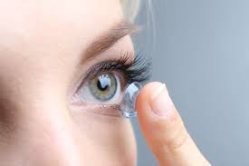

隱形眼鏡の比較

身為近視人，隱形眼鏡已經陪伴了我將近7年多的時間，
戴過日拋隱眼、年拋隱眼，最後是硬式隱形眼鏡陪了我最久，也會一直陪我下去，
今天就跟大家分享隱形眼鏡的比較及挑選，
此篇獻給我的靈魂之窗。
| |
軟式日拋 |
軟式年拋 |
硬式 |
| 價格 |
＄60/天 不等 |
＄2,500/年 不等 |
＄10,000/10年 （不弄丟不洗破的情況下） |
| 材質 |
矽水膠 |
矽水膠 |
矽與氟聚合物 |
| 清潔難易 |
免清潔 |
藥水 |
藥水 |
| 需適應時間 |
立即適應 |
1-2小時 |
短則一週長則一個月 |
| 含水度 |
中等 |
低 |
無 |
| 透氧率 |
中等 |
低 |
高 |
同場加映**硬式隱形眼鏡配戴分享
自從發現有乾眼症之後（戴了軟式長戴式隱形眼鏡過了三年），被眼科醫生判死刑
（乾眼症是無法治療的，只會越來越乾），我就（被迫）選擇硬式隱形眼鏡。
畢竟眼睛是靈魂之窗，要好好的珍惜它，所以第一次花了將近$7,000元配了一副
球面的硬式隱形眼鏡，剛開始戴的一個禮拜都有異物感（就像是帶著軟式隱眼但感覺
有東西在眼球上），不過好險我的眼睛蠻乖的沒有反抗他，他就這樣跟了我將近七年的時間。
硬式隱形眼鏡是會針對你的眼球弧度量身訂做一副專屬於你的鏡片，優點是折舊下來
C/P值高，藥水錢也很省，可以戴超過12小時不會良心不安（誤），不會有眼睛很乾的
感覺（因為他沒有含水度這件事），還可以把閃光度數降低，控制近視度數。
缺點是，只要有一丁點沙子、毛屑等，異物感會超級種，會流眼淚。所以只要是騎車
我一定是大鏡框＋安全帽防風鏡，有時候還是會有小沙子跑進眼睛，就會有某一眼一直流淚
的情況（在路邊），冬天的毛衣材質有時候也會造成相同災害，要有隨時隨地把隱眼拔下來
洗一起的準備。（用清水就可以洗了，不可以用生理食鹽水！）
雖然他這樣有點而麻煩，但還是很謝謝它讓我的世界變得更清晰，硬式隱形眼鏡還是會繼續
陪著我看這個美麗的世界。